O Avenida é o seu lar em Elvas, a cidade-forte mais representativa da escola de fortificação abaluartada europeia. Estrategicamente localizado na Avenida da Piedade , oferecemos-lhe acesso privilegiado ao Património Mundial da UNESCO, ao maior aqueduto da Península Ibérica, e à autêntica gastronomia alentejana. Descubra Elvas com o conforto de se sentir em casa.
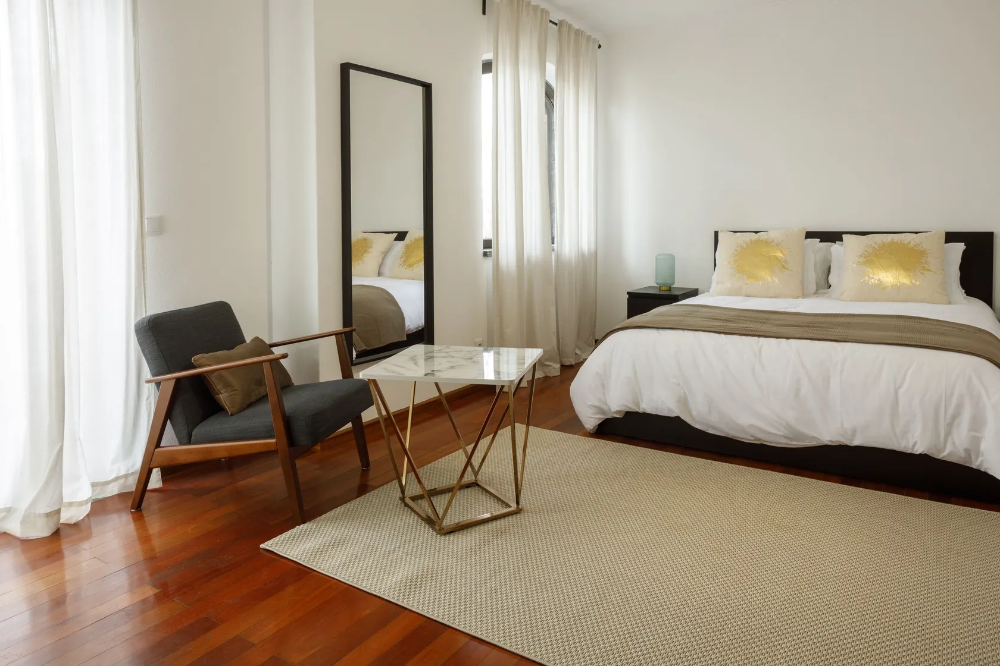
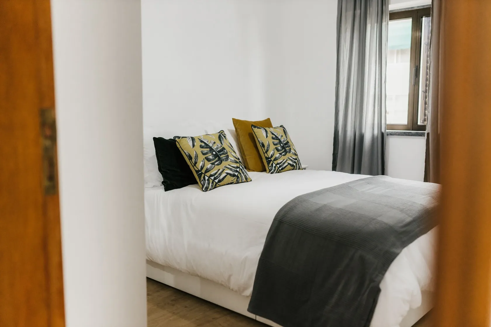
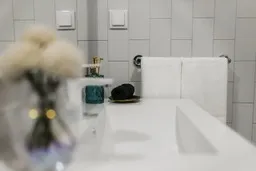
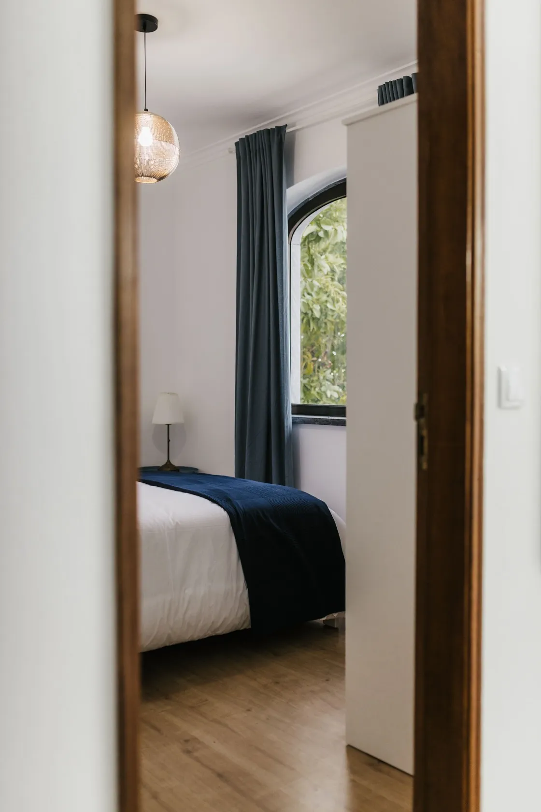
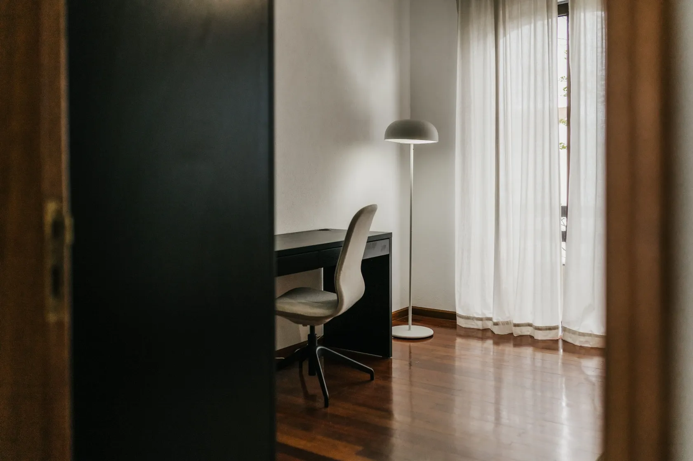
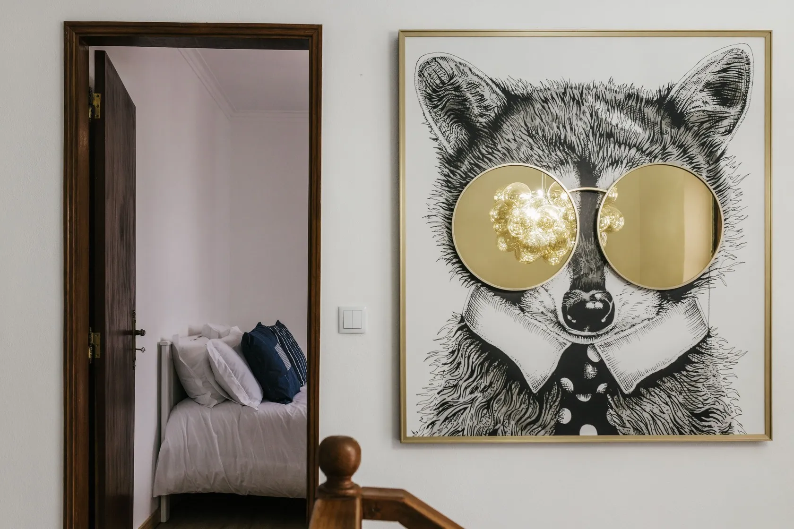
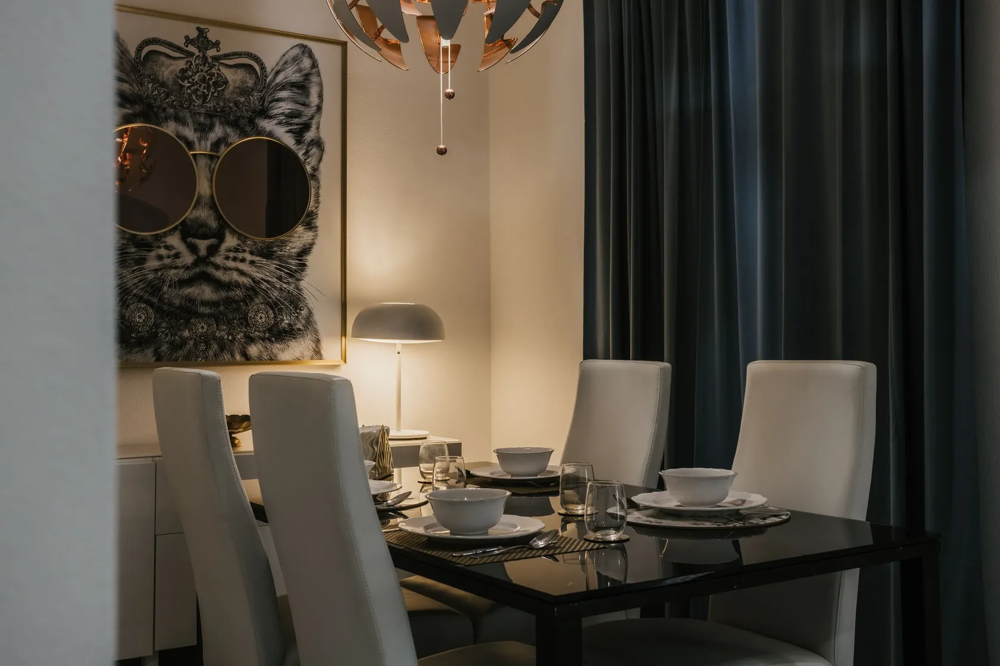
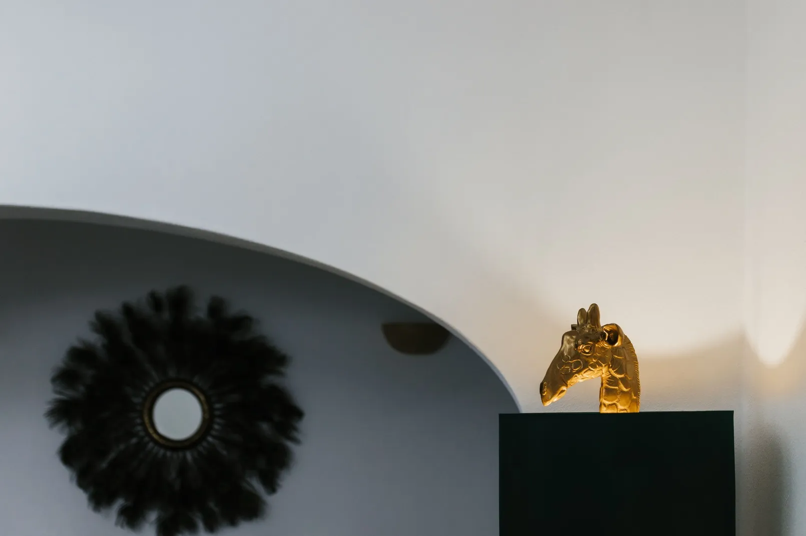
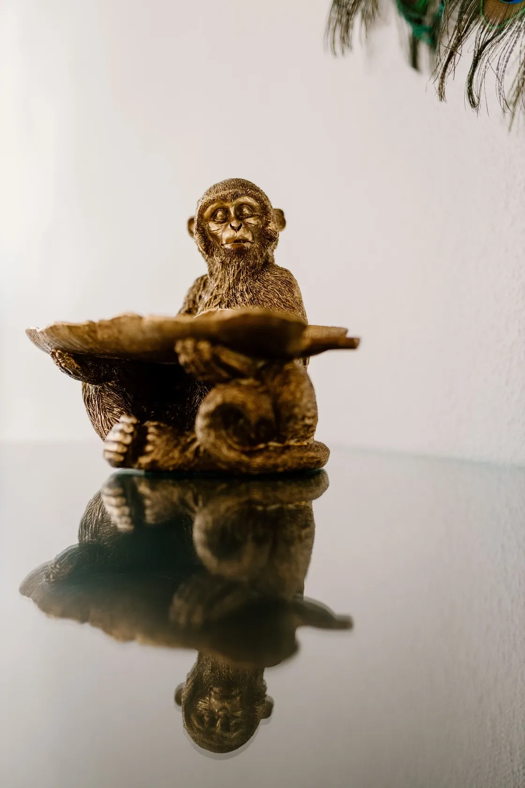
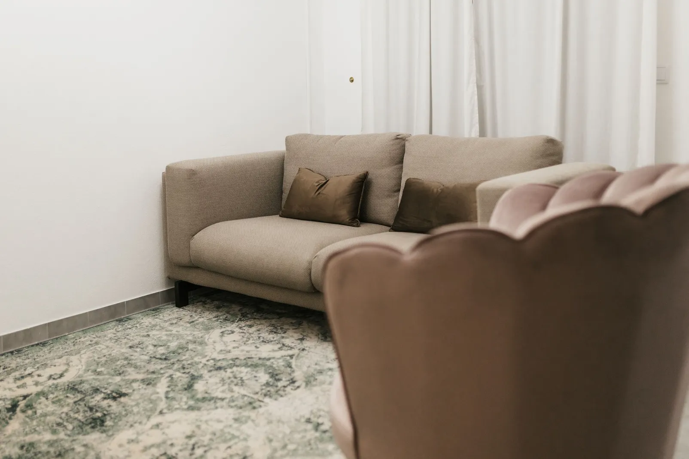
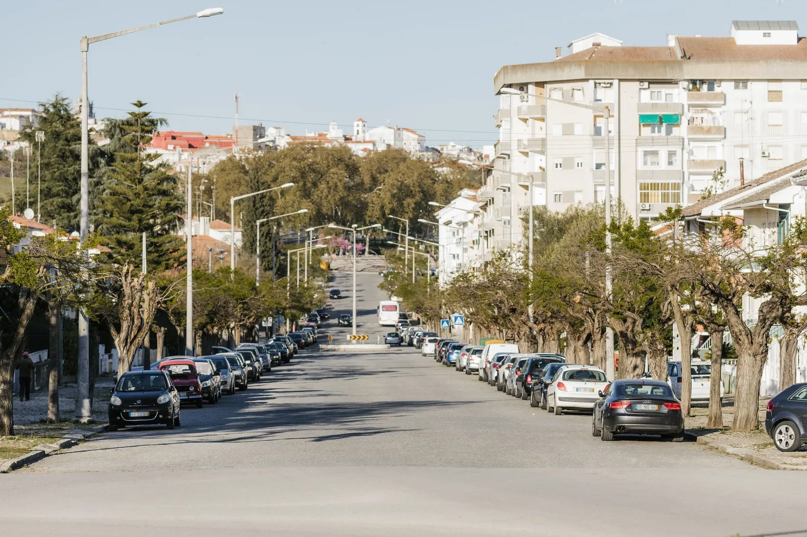
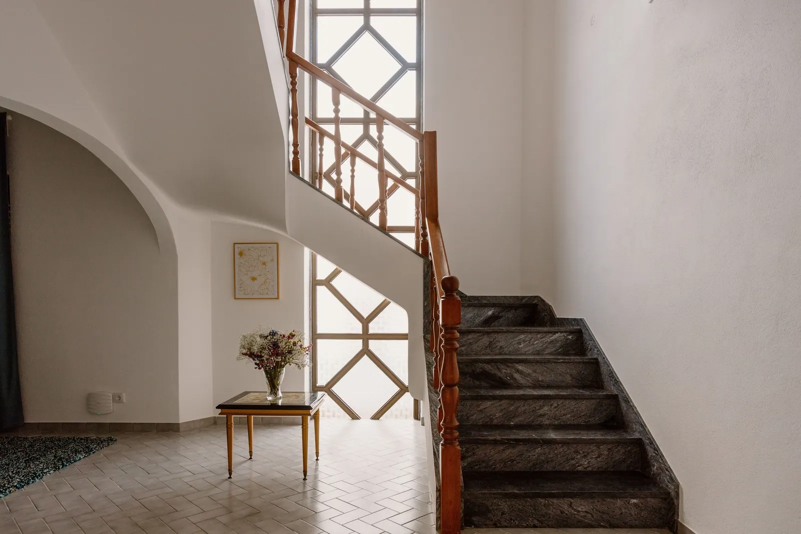
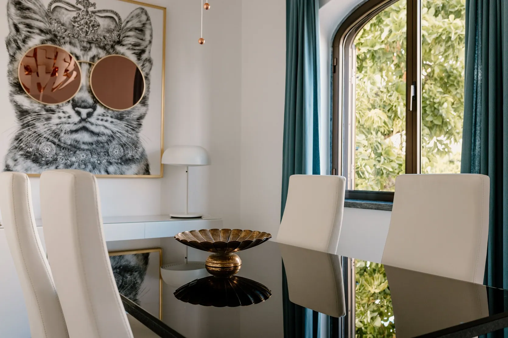
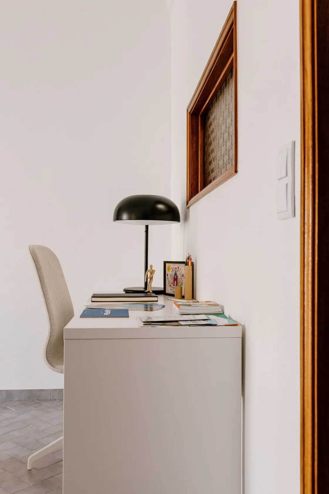
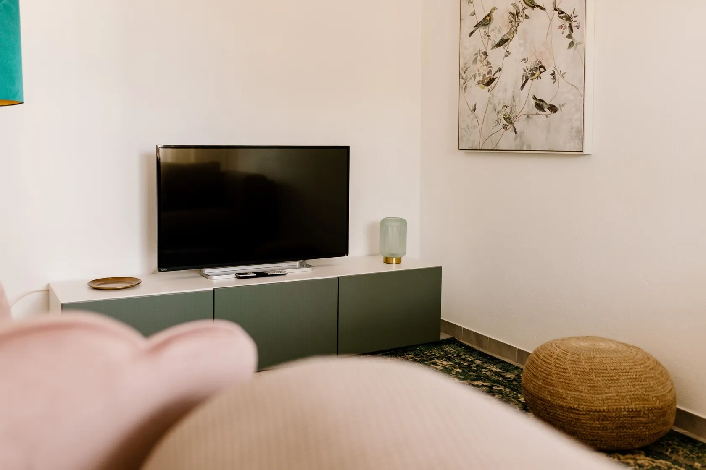
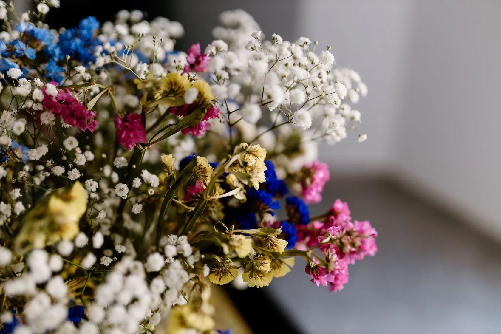
Nos dias quentes do verão, aproveite para refrescar-se nas piscinas e praias fluviais da região.